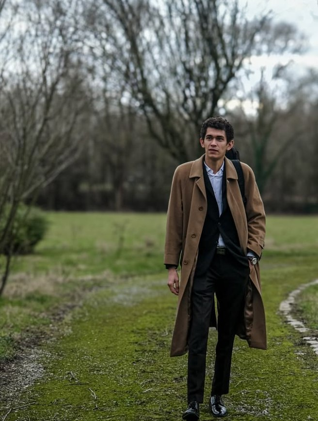
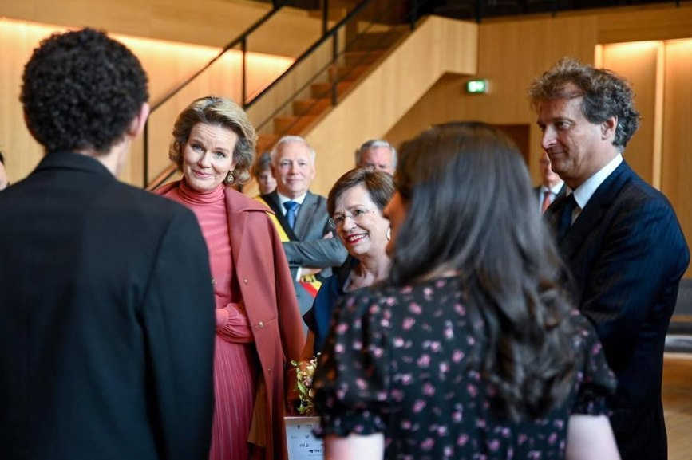

Biography
Violist, born in Goiás, Brazil.

Natanael Ferreira is a Brazilian violist and Artist in Residence at the Queen Elisabeth Music Chapel in Belgium.
Born in Goiás, he is a member of the Verbier Festival Chamber Orchestra and of the Utopia Orchestra.
He graduated from the Haute École de Musique de Genève, where he studied viola with Miguel da Silva and chamber music with Gábor Takács.
His prizes include first prize at the Campos do Jordão Winter Festival in 2013, awards at the Académie Ravel in 2015, and third prize at the Rahn Musikpreis in 2018.
As a chamber musician he has shared the stage with Augustin Dumay, Gary Hoffman, Frank Braley, Régis Pasquier, Henri Demarquette, Lorenzo Gatto, Marc Coppey, Ilya Gringolts and Heinz Holliger.
Artist in Residence
Natanael is in residence at the Queen Elisabeth Music Chapel, the Belgian institution dedicated to training and launching young soloists and chamber musicians.

Prizes
- 2013First prizeCampos do Jordão Winter Festival, Brazil
- 2015PrizesAcadémie Ravel, France
- 2018Third prizeRahn Musikpreis, Switzerland
Training
Haute École de Musique de Genève
Graduate
Miguel da Silva
Viola
Gábor Takács
Chamber music
On stage with
Augustin Dumay, Gary Hoffman, Frank Braley, Régis Pasquier, Henri Demarquette, Lorenzo Gatto, Marc Coppey, Ilya Gringolts, Heinz Holliger.